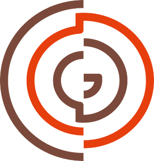
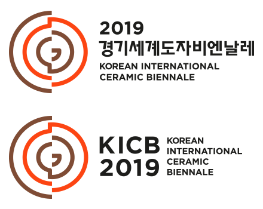

CI
심볼마크
경기세계도자비엔날레의 심볼마크에는 세계 도자의 중심 축이며 도자의 경계를 허물고 새로운 영역과 세계로 확장하는 경기세계도자비엔날레의 가치가 그대로 담겨 있습니다. 간결하고 현대적인 인상을 지니고 있는 심볼마크는 '기역'으로 인식되는 중앙 부분과 물레 혹은 도자기로 보이는 동심원의 형태가 모여 경기세계도자비엔날레만의 아이덴티티를 중의적이며 효과적으로 전달합니다.
또한 2019년부터 경기세계도자비엔날레는 국제적 인지도 및 정체성 확립을 위해 영문 행사 명칭을 기존 Gyeonggi International Ceramic Biennale에서 Korean International Ceremic Biennale로 변경하였습니다.

- 세계 도자의 중심축
- 도자의 경게를 허물며 새로운 영역으로 확장
- 전세계의 도자는 경기도로 한국의 도자문화는 세계로
- 경기의 ‘기억’
- 도자기 형태
시그니처
시그니처는 심볼 마크와 로고 타입을 일정한 기준에 따라 조합한 것입니다. 따라서 시그니처 조합은 다양한 조합의 방법 중 적용 매체에 따라 적절한 시그니처를 선택하여 사용할 수 있습니다.
전용색상
경기세계도자비엔날레의 아이덴티티를 전달하는 효과적인 또 하나의 요소는 컬러입니다. 경기세계도자비엔날레의 Color는 Orange와 Brown입니다. Orange 컬러는 불을 상징하는 동시에 경기세계도자비엔날레의 생생하고 따뜻한 느낌을 표현합니다. Brown 컬러는 흙과 자연을 연상시키며 견고하고 편안한 인상을 전달합니다.
Orange
CMYK
0 / 88 / 100 / 0
RGB
232 / 61 / 11
BROWN
CMYK
45 / 70 / 70 / 32
RGB
123 / 73 / 58